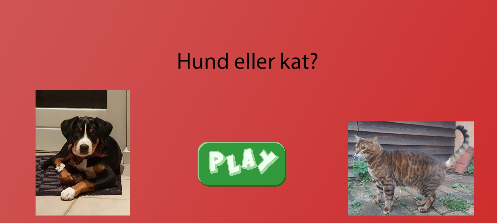
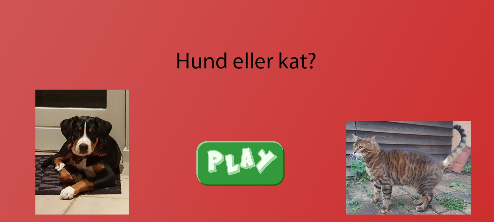

Assetliste og designdokumentation(04.01.05) Individuelt spil(04.05.01)
Læringsmål:
- Viden viden om praksisnær udviklingsmetode til digital medieproduktion
- Viden forståelse for i erhvervet anvendte metoder til brugertest af digitale produktioner
- Viden viden om grundlæggende principper for komposition og layout i digital medieproduktion
- Viden viden om praksisnære designprocesser og dokumentationsformer i digital medieproduktion
- Viden viden om aktuelle digitale udvekslingsformater i digital medieproduktion
- Færdigheder anvende grundlæggende teorier, metoder og værktøjer til styring af enkel multimedieproduktion, der knytter sig til praksis i erhvervet
- Færdigheder planlægge og udføre brugertest af digital medieproduktion, herunder vælge den rette brugertest til en given digital medieproduktion
- Færdigheder anvende, dokumentere centrale processer i design og udvikling af digitale medieproduktioner samt formidle processerne til interessenter med faglig indsigt
- Færdigheder anvende grundlæggende teorier, metoder og værktøj til design og udvikling af brugergrænseflader
- Færdigheder anvende og vurdere grundlæggende teknologier og udviklingsmiljøer til udvikling af brugergrænseflader, herunder metoder og teknologier til versionsstyring.
- Kompetencer indgå i tværfaglige arbejdsprocesser i design og udvikling af digitale brugergrænseflader
- Kompetencer under vejledning tilegne sig grundlæggende viden, færdigheder og kompetencer inden for design og udvikling af digitale brugergrænseflader.
Teori, Metoder og teknikker
I dette tema blev vi introduceret til CSS animations og JavaScript. Temaets lærte os hvordan vi opbygger vores eget spil ved brug af Html, css og JavaScript. Til dette tema benyttede jeg mig meget af de tidligere færdigheder og kompetencer som jeg allerede havde lært.Til at starte med researchede efter en idé til mit spil, og til dette lavede jeg et moodboard og flere former for skitser til at illustrere mine tanker og idéer til spillet. Jeg blev også demonstreret i idegenererings-teknikker, iterationer og generel viden om spildesign, som jeg også benyttede mig af til at generer en idé til mit spil. Efter jeg nogenlunde havde fået en idé om hvordan mit spil skulle være, lavede jeg en prototype for at vurdere hvorvidt det kunne lade sig gøre at virkelighedsgøre spillet. I forlængelse af dette lærte vejlederene mig at udarbejde et aktivitetsdiagram, som vi også fik træningsopgaver til i grupper. Aktivitetsdiagrammet har til formål at vise hvilke handlinger der sker hvordan og hvornår, samt om det er noget der vil kunne lade sig gøre. Aktivitetsdiagrammet var et simpelt men brugbart redskab til hele tiden at have noget at gå ud fra. Jeg følte at den fungerede lidt som en wireframe for en side, men bare for et spil i stedet. Jeg brugte meget disse teknikker til at få inspiration til mit spil og især til stilen af det. Det afsluttende idé blev til et rumspil, hvor man skulle beskytte jorden ved at syde de flyvende meteorer.
Jeg blev i dette forløb også undervist i Adobe illustrator, og hvordan vektorer fungerer i forhold til pixels. Jeg anvendte illustrator til design af mine komponenter til spillet, med komponenter skal det forstås som design af UI, spil-elementer, forgrund, baggrundsbillede, og generelle detaljer som indstillingsknapper osv. Altså havde Adobe illustrator til formål at indprinte ens design idéer til noget digitalt som man kunne se.

Animation
Som temaet antyder, så det mest centrale emne i det her tema animation. Jeg vil også mene at det var et af de vanskeligere emner. Vi lærte animationer via. klasseundervisning, gruppearbejde og opgaver. Mest brugbart var det katte og hunde øvelserne, 16 bolde øvelsen og repetition som fik mig forstå animationer på et dybere grundlag. Jeg udvalgte relevante css og animationer til mit spil, udvælgelsen skete på baggrund af tænk-højt-testen og testning på målgruppe (credits til min lille fætter). Animationsdelen var essentielt for udvikling af mit spil, havde det ikke været for animationsdelen, havde spillet overhoved ikke en form for sværhedsgrad eller indhold. For at give spillet mere dybde og indhold, lærte vi at indkode vores egen lydfil i spillet. 

Javascript
For at færdiggøre spillet og give hele spillet funktionalitet, blev jeg undervist i JavaScript. Herunder lærte jeg hvordan man tilføjer en class og fjerner den igen, hvilket var meget brugbar i mit spil, i og med, at jeg kunne tilføje funktionen fjern meteor, når man trykkede på den. Jeg lærte variabler og mere komplekse struktur såsom betingelser som "if" eller "else" som jeg brugte til liv og tid. Disse lærte jeg gennem opgaver fra kontaneringen og igen hund-katte opgaverne. Efter jeg fik tilegnet den viden, kunne jeg endeligt strukturerer en statemachine-diagram, som har til formål at vise funktionaliteten ved bestemte scenarier og ud fra statemachine-diagrammet kunne jeg kode funktionerne.
Til mit spil benyttede jeg mig meget af "add/remove.class", til når man skød de forskellige meteoer eller jorden. "Add/remove.class" blev også brugt til når man enten havde tabt eller vundet, altså så ville man "skjule" win-siden, indtil man havde skudt alle meteorerne. Jeg brugte console.log til at fejlfinde min side og for at få generelt overblik. Til sidst brugte jeg kombinationen "else/if" og "let" til at definere liv og tid med.